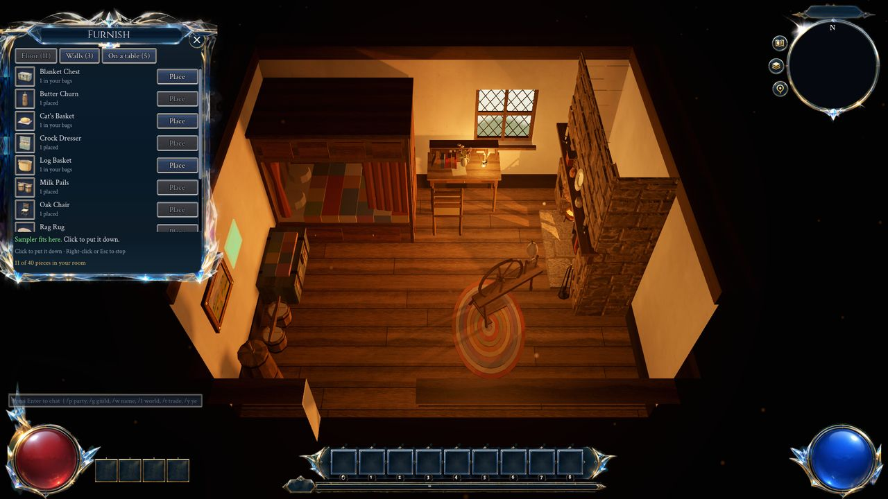
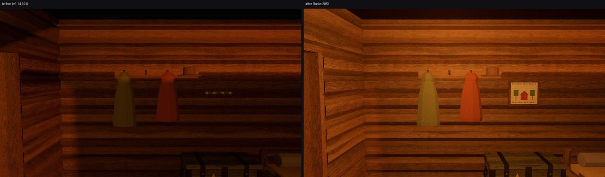
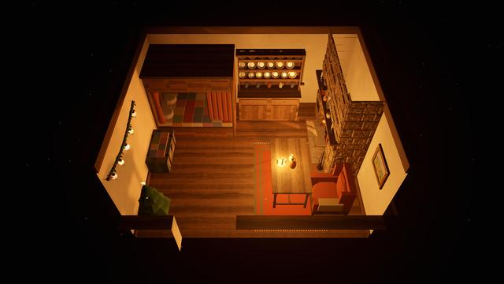
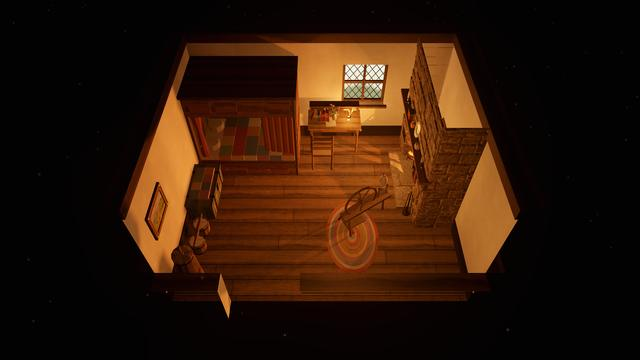
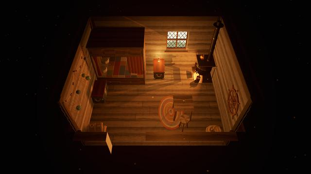
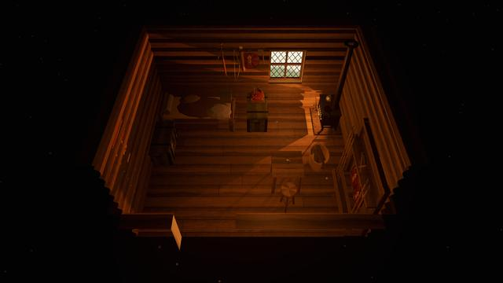
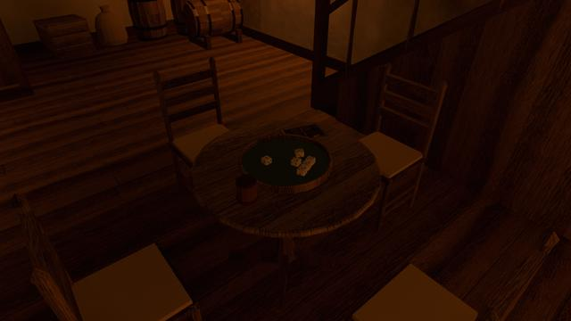

Your room A room of your own upstairs at any inn: renting it, sleeping Well Rested, furnishing it, the six Furnishers and every piece of furniture and trophy.
Every innkeeper lets a room upstairs (1.14.104). Ask the innkeeper: a room costs 150 gold a week, and you can pay up to 4 weeks ahead. A room that runs out keeps your furniture, but its door stays shut until you pay again. If you rent at a different inn later, your room moves there and takes your things with it, each piece where it stood if it still fits; anything that won't fit goes back to your bags. A room still paid for moves at no cost, its paid weeks coming with it; one whose rent has run out costs a week's rent to move, and the innkeeper's card says which (1.14.105). Go up through the innkeeper, and come down through the room's door to the inn's common room.
Each town's rooms are its own, and every room has a bed, a chest and a fire. Sleep in your bed and you wake Well Rested : 10% more experience for an hour, on top of Warmed Through for 30% in all. Your chest opens your stash, so you can sort your bags at home.
Press F4 to furnish (or the button at your chest). The piece follows your pointer, snaps to a quarter of a metre and turns in 15-degree steps. It shows green where it can stand and red where it can't, with the reason: against a wall, in the doorway, in the way to your bed, and so on. Pictures and trophies hang flat on a wall, and candles and mugs stand on a table or chest. Click a placed piece to pick it up and move it or put it away. A room holds up to 40 pieces; it is 5 by 4 metres, so about seven big ones fit.
Six Furnishers, one in every inn, sell 56 pieces between them: the plain pieces at every inn, and each town's own style at home. The first time you bring down a story chapter's last boss or a raid's, you get its trophy (17 in all), and Mabyn Tallow , the Candlewright, sells two Lanternfast pieces for candles. A piece sells back to a merchant for a quarter of its price; a trophy for nothing.
Your party and your friends can visit while you are in: ask any innkeeper for your room by your name. Up to 8 people fit in a room. Visitors can look around, but only you can move things, sleep in the bed or open the chest.
Pictures, banners and pegs hang on the face of the wall, whether it is plaster, log, stone, driftwood or birch, and every piece stands centred on its spot, on the floor or the table (1.14.105). A tall piece may not stand up through a picture or trophy hung above it.


The rooms Sold at every inn Harrowford's own Millbrook's own Lisswen Hollow's own Gullhaven's own Emberwatch's own Highwatch's own From the notice boards Trophies Lanternfast
The rooms6 Plaster walls and planked floors over Harrowford's inn, with a bed, a chest and a fire of your own.
Inn The Lamplit Hare Town Harrowford Rent from Ned Marrowby Rent 150 gold a week, up to 4 weeks ahead Size 5 by 4 metres Furnisher Briony Rookwood Holds Up to 40 pieces of furniture and 8 people Since 1.14.104 
Upstairs · Millbrook Farms Whitewashed walls under the Brook Inn's low beams, farmhouse-plain, with a bed, a chest and a fire.
Inn The Brook Inn Town Millbrook Farms Rent from Dorrit Haymoss Rent 150 gold a week, up to 4 weeks ahead Size 5 by 4 metres Furnisher Piran Fennick Holds Up to 40 pieces of furniture and 8 people Since 1.14.104 
Upstairs · Lisswen Hollow Driftwood walls and an iron stove over the Salt Lantern's long bar, with a bed and a chest.
Inn The Salt Lantern Town Gullhaven Rent from Gwenna Tarrow Rent 150 gold a week, up to 4 weeks ahead Size 5 by 4 metres Furnisher Kenver Penhallow Holds Up to 40 pieces of furniture and 8 people Since 1.14.104 
Upstairs · Emberwatch Camp Log walls and a fur bunk over the Ember Mess, with a chest and a camp stove. Since 1.14.105 two hanging lanterns light it; before, it was the darkest room by half.
Inn The Ember Mess Town Emberwatch Camp Rent from Bram Coalway Rent 150 gold a week, up to 4 weeks ahead Size 5 by 4 metres Furnisher Sella Brandock Holds Up to 40 pieces of furniture and 8 people Since 1.14.104 
Upstairs · Highwatch Keep Sold at every inn25 A plain oak chair with a rush seat, the kind every kitchen in the vale has four of.
Where Stands on the floor Size 45 cm by 42 cm From Every inn's Furnisher Price 25 gold Sells back for 6 gold A three-legged stool, tall enough for a counter or for watching the fire over someone's shoulder.
Where Stands on the floor Size 37 cm by 37 cm From Every inn's Furnisher Price 15 gold Sells back for 3 gold A square oak table for one, or for two who do not mind elbows.
Where Stands on the floor; things may be set on it Size 70 cm by 70 cm From Every inn's Furnisher Price 40 gold Sells back for 10 gold A round table on a stout pedestal, scrubbed pale. Room for a game of cards and a candle.
Where Stands on the floor; things may be set on it Size 1.1 m by 1.1 m From Every inn's Furnisher Price 70 gold Sells back for 17 gold A round oak table with a dice tray lined in green baize, a leather cup and a slate for the tally, like the one downstairs. Put it in your room and your friends and party can sit down to a game of Cinders with you.
Where Stands on the floor Size 96 cm by 96 cm From Every inn's Furnisher Price 400 gold Seats Two to four, your friends and party; the first to sit sets the stake, up to 500 gold. A game of Cinders Sells back for 100 gold 
A tallow candle in a pewter stick. Set it on a table and it will burn as long as you are home.
Where Stands on a table or chest Size 14 cm by 10 cm From Every inn's Furnisher Price 6 gold Sells back for 1 gold Three candles of different heights in a dish, for a table, a sill or a quiet evening.
Where Stands on a table or chest Size 23 cm by 21 cm From Every inn's Furnisher Price 14 gold Sells back for 3 gold A child's sampler in a frame: borders, a little house and two trees, worked in red, green and blue.
Where Hangs on a wall Size 45 cm wide From Every inn's Furnisher Price 30 gold Sells back for 7 gold A long woven rug in red and ochre with a dark border. Warm underfoot on a cold morning.
Where Stands on the floor Size 2.5 m by 1.6 m From Every inn's Furnisher Price 60 gold Sells back for 15 gold A round rug braided from old cloth, coil on coil.
Where Stands on the floor Size 1.8 m by 1.8 m From Every inn's Furnisher Price 55 gold Sells back for 13 gold Strips of old shirts and skirts hooked through sacking. Every family has one, and no two are alike.
Where Stands on the floor Size 1.58 m by 0.99 m From Every inn's Furnisher Price 30 gold Sells back for 7 gold A clay pot of green herbs for a sill or a table. It asks only for light and the odd drop of water.
Where Stands on a table or chest Size 29 cm by 24 cm From Every inn's Furnisher Price 12 gold Sells back for 3 gold Wild flowers in a stoneware jar. They never quite wilt, which nobody asks about.
Where Stands on a table or chest Size 22 cm by 22 cm From Every inn's Furnisher Price 10 gold Sells back for 2 gold A few well-thumbed books: an almanac, a book of hours and a tale of the old roads.
Where Stands on a table or chest Size 38 cm by 18 cm From Every inn's Furnisher Price 18 gold Sells back for 4 gold A brown jug and a cream one, for water, milk or something stronger.
Where Stands on a table or chest Size 34 cm by 15 cm From Every inn's Furnisher Price 12 gold At the markets From a travelling cupmaker (Cups and Drink ), 14 to 29 gold, by town; at every market, one a hero each market Sells back for 3 gold A dented pewter mug. It has seen better ale and worse company.
Where Stands on a table or chest Size 11 cm by 8 cm From Every inn's Furnisher Price 4 gold At the markets From a travelling cupmaker (Cups and Drink ), 5 to 11 gold, by town; at every market, up to 2 a hero each market Sells back for 1 gold A wicker basket of split logs to keep by the hearth.
Where Stands on the floor Size 68 cm by 48 cm From Every inn's Furnisher Price 20 gold Sells back for 5 gold A low basket with a folded blanket in it. A cat may come. A cat may not. It is not up to you.
Where Stands on the floor Size 60 cm by 50 cm From Every inn's Furnisher Price 25 gold Sells back for 6 gold A low oak chest for the winter blankets, with a flat lid that takes a candle or a book.
Where Stands on the floor; things may be set on it Size 1.03 m by 0.55 m From Every inn's Furnisher Price 55 gold Sells back for 13 gold A rail of oak pegs for a cloak, a coat and a hat that has been rained on too often.
Where Hangs on a wall Size 1.23 m wide From Every inn's Furnisher Price 22 gold Sells back for 5 gold An oak writing table with pigeonholes at the back for letters, an inkwell and a quill.
Where Stands on the floor; things may be set on it Size 1.1 m by 0.6 m From Every inn's Furnisher Price 140 gold Sells back for 35 gold An open oak bookcase of four shelves, filled with books of every height and lean.
Where Stands on the floor Size 1.02 m by 0.34 m From Every inn's Furnisher Price 130 gold Sells back for 32 gold A wrought-iron screen of three panels with a brass rail, to stand before a hearth and keep the sparks in.
Where Stands on the floor Size 1.01 m by 0.26 m From Every inn's Furnisher Price 60 gold Sells back for 15 gold A woven hanging on an oak pole: a hill, a tree, a river and a small house under the sun.
Where Hangs on a wall Size 1.2 m wide From Every inn's Furnisher Price 120 gold Sells back for 30 gold A small oil painting of the vale in a carved frame: the hills, the fields and a lane going home.
Where Hangs on a wall Size 70 cm wide From Every inn's Furnisher Price 90 gold Sells back for 22 gold Harrowford's own10 A deep armchair with a worn cushion, made for sitting by the fire until the fire goes out.
Where Stands on the floor Size 84 cm by 80 cm From Briony Rookwood at The Lamplit Hare Price 90 gold At the markets From a travelling joiner (Joinery ), 99 to 208 gold, by town; Millbrook Farms , Lisswen Hollow , Gullhaven , Emberwatch Camp and Highwatch Keep , one a hero each market Sells back for 22 gold A high-backed oak settle for two. The back keeps the draught off your neck.
Where Stands on the floor Size 1.64 m by 0.59 m From Briony Rookwood at The Lamplit Hare Price 110 gold At the markets From a travelling joiner (Joinery ), 121 to 254 gold, by town; Millbrook Farms , Lisswen Hollow , Gullhaven , Emberwatch Camp and Highwatch Keep , one a hero each market Sells back for 27 gold A rocking chair with a creak in it that some find restful.
Where Stands on the floor Size 56 cm by 95 cm From Briony Rookwood at The Lamplit Hare Price 80 gold At the markets From a travelling joiner (Joinery ), 88 to 185 gold, by town; Millbrook Farms , Lisswen Hollow , Gullhaven , Emberwatch Camp and Highwatch Keep , one a hero each market Sells back for 20 gold A long plain bench, seats three friends or one hero with their boots up.
Where Stands on the floor Size 2 m by 0.4 m From Briony Rookwood at The Lamplit Hare Price 45 gold At the markets From a travelling joiner (Joinery ), 50 to 105 gold, by town; Millbrook Farms , Lisswen Hollow , Gullhaven , Emberwatch Camp and Highwatch Keep , one a hero each market Sells back for 11 gold A farmhouse kitchen table, its top scrubbed pale with years of bread and soap.
Where Stands on the floor; things may be set on it Size 1.5 m by 0.85 m From Briony Rookwood at The Lamplit Hare Price 85 gold At the markets From a travelling joiner (Joinery ), 94 to 197 gold, by town; Millbrook Farms , Lisswen Hollow , Gullhaven , Emberwatch Camp and Highwatch Keep , one a hero each market Sells back for 21 gold A tall dresser with plates on its rack and cupboards below. It stands against a wall.
Where Stands on the floor Size 1.68 m by 0.54 m From Briony Rookwood at The Lamplit Hare Price 160 gold At the markets From a travelling joiner (Joinery ), 176 to 370 gold, by town; Millbrook Farms , Lisswen Hollow , Gullhaven , Emberwatch Camp and Highwatch Keep , one a hero each market Sells back for 40 gold A longcase clock with a painted moon on its face. It keeps good time, give or take an hour.
Where Stands on the floor Size 54 cm by 33 cm From Briony Rookwood at The Lamplit Hare Price 220 gold At the markets From a travelling joiner (Joinery ), 242 to 508 gold, by town; Millbrook Farms , Lisswen Hollow , Gullhaven , Emberwatch Camp and Highwatch Keep , one a hero each market Sells back for 55 gold A washstand with a bowl and a ewer, for a cold splash on a cold morning.
Where Stands on the floor Size 67 cm by 45 cm From Briony Rookwood at The Lamplit Hare Price 50 gold At the markets From a travelling joiner (Joinery ), 55 to 116 gold, by town; Millbrook Farms , Lisswen Hollow , Gullhaven , Emberwatch Camp and Highwatch Keep , one a hero each market Sells back for 12 gold A set of shelves full of jam, pickles and things nobody can name. It stands against a wall.
Where Stands on the floor Size 1.2 m by 0.33 m From Briony Rookwood at The Lamplit Hare Price 70 gold At the markets From a travelling joiner (Joinery ), 77 to 162 gold, by town; Millbrook Farms , Lisswen Hollow , Gullhaven , Emberwatch Camp and Highwatch Keep , one a hero each market Sells back for 17 gold A bed built like a cupboard, with doors to shut out the draughts and a patchwork quilt inside.
Where Stands on the floor Size 2.06 m by 1.25 m From Briony Rookwood at The Lamplit Hare Price 240 gold At the markets From a travelling joiner (Joinery ), 264 to 554 gold, by town; Millbrook Farms , Lisswen Hollow , Gullhaven , Emberwatch Camp and Highwatch Keep , one a hero each market Sells back for 60 gold Millbrook's own4 A Millbrook farmhouse dresser stacked with crocks, jugs and the good plates.
Where Stands on the floor Size 1.88 m by 0.58 m From Piran Fennick at The Brook Inn Price 170 gold At the markets From a travelling joiner (Joinery ), 187 to 393 gold, by town; Lisswen Hollow , Gullhaven , Emberwatch Camp , Highwatch Keep and Harrowford , one a hero each market Sells back for 42 gold A tall wooden churn with its dasher. The butter does not make itself.
Where Stands on the floor Size 43 cm by 43 cm From Piran Fennick at The Brook Inn Price 45 gold At the markets From a travelling joiner (Joinery ), 50 to 105 gold, by town; Lisswen Hollow , Gullhaven , Emberwatch Camp , Highwatch Keep and Harrowford , one a hero each market Sells back for 11 gold A spinning wheel with a hank of wool still on it, for long winter evenings.
Where Stands on the floor Size 1.01 m by 0.48 m From Piran Fennick at The Brook Inn Price 120 gold At the markets From a travelling joiner (Joinery ), 132 to 277 gold, by town; Lisswen Hollow , Gullhaven , Emberwatch Camp , Highwatch Keep and Harrowford , one a hero each market Sells back for 30 gold Two pails and a stool, ready for the morning milking.
Where Stands on the floor Size 70 cm by 30 cm From Piran Fennick at The Brook Inn Price 20 gold At the markets From a travelling joiner (Joinery ), 22 to 46 gold, by town; Lisswen Hollow , Gullhaven , Emberwatch Camp , Highwatch Keep and Harrowford , one a hero each market Sells back for 5 gold Lisswen Hollow's own4 A bench of pale birch carved with leaves along its back, as they make them in the Hollow.
Where Stands on the floor Size 2.01 m by 0.56 m From Faelin Ashgrove at The Mossy Bough Price 120 gold At the markets From a travelling joiner (Joinery ), 132 to 277 gold, by town; Millbrook Farms , Gullhaven , Emberwatch Camp , Highwatch Keep and Harrowford , one a hero each market Sells back for 30 gold A birch stump smoothed into a seat. Sturdier than it looks, and it looks sturdy.
Where Stands on the floor Size 45 cm by 44 cm From Faelin Ashgrove at The Mossy Bough Price 20 gold At the markets From a travelling joiner (Joinery ), 22 to 46 gold, by town; Millbrook Farms , Gullhaven , Emberwatch Camp , Highwatch Keep and Harrowford , one a hero each market Sells back for 5 gold A settle of the Hollow, its back carved with twining branches and moths.
Where Stands on the floor Size 1.54 m by 0.62 m From Faelin Ashgrove at The Mossy Bough Price 150 gold At the markets From a travelling joiner (Joinery ), 165 to 347 gold, by town; Millbrook Farms , Gullhaven , Emberwatch Camp , Highwatch Keep and Harrowford , one a hero each market Sells back for 37 gold Shelves of small carvings: birds, hares, a fox asleep. It stands against a wall.
Where Stands on the floor Size 1.2 m by 0.3 m From Faelin Ashgrove at The Mossy Bough Price 90 gold At the markets From a travelling joiner (Joinery ), 99 to 208 gold, by town; Millbrook Farms , Gullhaven , Emberwatch Camp , Highwatch Keep and Harrowford , one a hero each market Sells back for 22 gold Gullhaven's own5 A sailor's chest with rope handles, its lid worn smooth.
Where Stands on the floor; things may be set on it Size 96 cm by 49 cm From Kenver Penhallow at The Salt Lantern Price 70 gold At the markets From a travelling joiner (Joinery ), 77 to 162 gold, by town; Millbrook Farms , Lisswen Hollow , Emberwatch Camp , Highwatch Keep and Harrowford , one a hero each market Sells back for 17 gold The wheel of a boat that came home for the last time. It hangs on the wall now.
Where Hangs on a wall Size 1.09 m wide From Kenver Penhallow at The Salt Lantern Price 110 gold At the markets From a travelling joiner (Joinery ), 121 to 254 gold, by town; Millbrook Farms , Lisswen Hollow , Emberwatch Camp , Highwatch Keep and Harrowford , one a hero each market Sells back for 27 gold A neat coil of tarred rope. Every Gullhaven house has one by the door.
Where Stands on the floor Size 57 cm by 55 cm From Kenver Penhallow at The Salt Lantern Price 12 gold At the markets From a travelling joiner (Joinery ), 13 to 27 gold, by town; Millbrook Farms , Lisswen Hollow , Emberwatch Camp , Highwatch Keep and Harrowford , one a hero each market Sells back for 3 gold A pair of wicker crab pots, empty, and smelling only a little of the sea.
Where Stands on the floor Size 61 cm by 52 cm From Kenver Penhallow at The Salt Lantern Price 25 gold At the markets From a travelling joiner (Joinery ), 28 to 59 gold, by town; Millbrook Farms , Lisswen Hollow , Emberwatch Camp , Highwatch Keep and Harrowford , one a hero each market Sells back for 6 gold A fishing net hung on the wall with glass and cork floats caught in it.
Where Hangs on a wall Size 2.39 m wide From Kenver Penhallow at The Salt Lantern Price 60 gold At the markets From a travelling joiner (Joinery ), 66 to 139 gold, by town; Millbrook Farms , Lisswen Hollow , Emberwatch Camp , Highwatch Keep and Harrowford , one a hero each market Sells back for 15 gold Emberwatch's own5 An iron-bound soldier's chest that has been on every march since the siege.
Where Stands on the floor; things may be set on it Size 1.06 m by 0.58 m From Sella Brandock at The Ember Mess Price 60 gold At the markets From a travelling joiner (Joinery ), 66 to 139 gold, by town; Millbrook Farms , Lisswen Hollow , Gullhaven , Highwatch Keep and Harrowford , one a hero each market Sells back for 15 gold A rack of spears and swords for the wall, as the watch keeps them. It stands against a wall.
Where Stands on the floor Size 1.8 m by 0.45 m From Sella Brandock at The Ember Mess Price 130 gold At the markets From a travelling joiner (Joinery ), 143 to 300 gold, by town; Millbrook Farms , Lisswen Hollow , Gullhaven , Highwatch Keep and Harrowford , one a hero each market Sells back for 32 gold The banner of the Emberwatch: an ember on red, frayed at the hem.
Where Hangs on a wall Size 84 cm wide From Sella Brandock at The Ember Mess Price 70 gold At the markets From a travelling joiner (Joinery ), 77 to 162 gold, by town; Millbrook Farms , Lisswen Hollow , Gullhaven , Highwatch Keep and Harrowford , one a hero each market Sells back for 17 gold A low bunk piled with furs. Not soft, but warm, which is better.
Where Stands on the floor Size 2 m by 1.01 m From Sella Brandock at The Ember Mess Price 120 gold At the markets From a travelling joiner (Joinery ), 132 to 277 gold, by town; Millbrook Farms , Lisswen Hollow , Gullhaven , Highwatch Keep and Harrowford , one a hero each market Sells back for 30 gold Pegs for a sword, a shield and a spare cloak, as a soldier keeps them by the door.
Where Hangs on a wall Size 1.21 m wide From Sella Brandock at The Ember Mess Price 55 gold At the markets From a travelling joiner (Joinery ), 61 to 128 gold, by town; Millbrook Farms , Lisswen Hollow , Gullhaven , Highwatch Keep and Harrowford , one a hero each market Sells back for 13 gold Highwatch's own3 Thick sheepskins laid on the floor, as Highwatch lays them in front of every hearth.
Where Stands on the floor Size 1.37 m by 0.89 m From Ulfa Greyfell at The Frost-Kettle Price 50 gold At the markets From a travelling joiner (Joinery ), 55 to 96 gold, by town; Millbrook Farms , Lisswen Hollow , Gullhaven , Emberwatch Camp and Harrowford , one a hero each market Sells back for 12 gold A great pair of antlers on an oak board. Somebody's grandfather shot it, and tells you so.
Where Hangs on a wall Size 87 cm wide From Ulfa Greyfell at The Frost-Kettle Price 80 gold At the markets From a travelling joiner (Joinery ), 88 to 154 gold, by town; Millbrook Farms , Lisswen Hollow , Gullhaven , Emberwatch Camp and Harrowford , one a hero each market Sells back for 20 gold A neat stack of split pine for the long winter.
Where Stands on the floor Size 94 cm by 38 cm From Ulfa Greyfell at The Frost-Kettle Price 25 gold At the markets From a travelling joiner (Joinery ), 28 to 49 gold, by town; Millbrook Farms , Lisswen Hollow , Gullhaven , Emberwatch Camp and Harrowford , one a hero each market Sells back for 6 gold From the notice boards2 A wanted notice from the boards, the beast drawn in soot, behind glass in a dark oak frame.
Where Hangs on a wall Size 46 cm wide From Any notice board's clerk , for 60 Bounty MarksSix claws hung on an iron crescent with a red rosette: the boards' thanks to one who brought in six wanted beasts.
Where Stands on a table or chest Size 34 cm by 22 cm From Any notice board's clerk , for 250 Bounty Marks, once you have slain six wanted beasts you held the notice forTrophies17 What is left of the Sundered King's crown, broken where his line broke, on a red cushion.
Where Stands on a table or chest Size 40 cm by 40 cm From The first time one of your account's heroes brings down The Sundered King Sells back for Nothing: it is yours to keep The Last Lamplighter's own lantern. It still glows, though nothing is burning in it.
Where Stands on a table or chest Size 30 cm by 30 cm From The first time one of your account's heroes brings down Ilgrim, the Last Lamplighter Sells back for Nothing: it is yours to keep A wing of the Pale Moth in a case. It is very still. You are almost sure of that.
Where Hangs on a wall Size 60 cm wide From The first time one of your account's heroes brings down The Pale Moth Sells back for Nothing: it is yours to keep The shuttle that ran the Loomwright's warp, wound with thread that is not quite silver.
Where Stands on a table or chest Size 50 cm by 20 cm From The first time one of your account's heroes brings down The Loomwright Sells back for Nothing: it is yours to keep A green bronze bell from the Undertow. It rings by itself at the turn of the tide.
Where Stands on the floor Size 50 cm by 40 cm From The first time one of your account's heroes brings down The Tideloom Sells back for Nothing: it is yours to keep A snarl of thread pinned to a stand so that it cannot come undone. Or do anything else.
Where Stands on a table or chest Size 30 cm by 30 cm From The first time one of your account's heroes brings down The Ravel Sells back for Nothing: it is yours to keep An oar from the boat that rowed the wrong way, painted blue and red, hung on two brackets.
Where Hangs on a wall Size 1.4 m wide From The first time one of your account's heroes brings down Ilsabet, the Backweaver Sells back for Nothing: it is yours to keep A shard of Tebasli's glass in a hand mirror's frame. Your reflection is a moment late.
Where Stands on a table or chest Size 33 cm by 20 cm From The first time one of your account's heroes brings down Tebasli, the Looking-Glass Sells back for Nothing: it is yours to keep Aubrel Corrow's great iron key on an oak shield. It opens nothing now, and that is a relief.
Where Hangs on a wall Size 70 cm wide From The first time one of your account's heroes brings down Aubrel Corrow, the First Gatewarden Sells back for Nothing: it is yours to keep Gyda Thrum's spindle, its whorl still rimed with frost that never melts.
Where Stands on a table or chest Size 30 cm by 30 cm From The first time one of your account's heroes brings down Gyda Thrum, the King's Spinster Sells back for Nothing: it is yours to keep The Cutter-off's great shears, open on an oak plaque. Nobody hangs a coat near them.
Where Hangs on a wall Size 60 cm wide From The first time one of your account's heroes brings down Maud Kerf, the Cutter-off Sells back for Nothing: it is yours to keep The Measurer's brass-ended ell-rule. Every notch on it is a little wrong, on purpose.
Where Hangs on a wall Size 90 cm wide From The first time one of your account's heroes brings down Agnes Ellery, the Measurer Sells back for Nothing: it is yours to keep One great horn button from the Tailor's unfinished coat, still threaded.
Where Stands on a table or chest Size 29 cm by 24 cm From The first time one of your account's heroes brings down Orrin Wend, the Tailor Sells back for Nothing: it is yours to keep The Abyssal Angler's lure on a stone plinth. Its light is the colour of very deep water.
Where Stands on the floor Size 50 cm by 50 cm From The first time one of your account's heroes brings down Morrowmaw, the Abyssal Angler Sells back for Nothing: it is yours to keep A sliver of the star the Cinderwell caught, kept in an iron cage. It is warm to the touch.
Where Stands on a table or chest Size 35 cm by 35 cm From The first time one of your account's heroes brings down The Caught Star Sells back for Nothing: it is yours to keep A spool of the golden thread Mother Halse wove first, before all the others.
Where Stands on a table or chest Size 40 cm by 39 cm From The first time one of your account's heroes brings down Mother Halse, the First Weaver Sells back for Nothing: it is yours to keep A gilt dice cup on a turned oak foot, beaded round its waist, and three bone dice before it showing three ones: a thousand, the best throw of three.
Where Stands on a table or chest Size 18 cm by 21 cm From Beating every inn's regular at Cinders , with the title Champion of the Six Tables Sells back for Nothing: it is yours to keep Lanternfast2 An evergreen swag hung with little paper lanterns, as Lanternfast is kept in every window.
Where Hangs on a wall Size 1.94 m wide From Mabyn Tallow , for 25 candles, while Lanternfast runsA small fir in a tub, hung with lanterns and red ribbon, with a gold star on top.
Where Stands on the floor Size 67 cm by 74 cm From Mabyn Tallow , for 40 candles, while Lanternfast runs